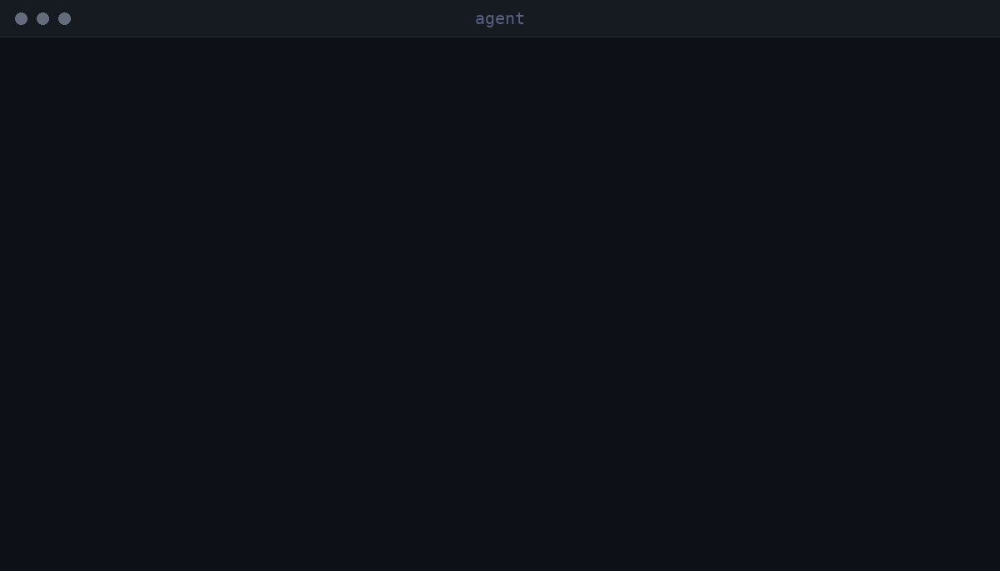
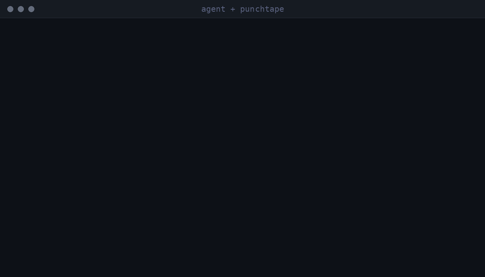

Your AI writes the code. punchtape makes it get the entire job done - with every claim proven.
Your words are taken down word for word. The machine runs every check itself. The agent cannot declare done - it can only make done true.
The same task, twice


The numbers, measured
times you had to verify and accept the work
your verifying time (est.)
tasks accepted on first submission
Per 25 tasks, without → with punchtape. Field series 0.4.0. Three rounds of field tests are published as a paper (a preprint, not peer-reviewed): blind judges checked 1720 points across both groups and found nothing missing in either group - SSRN · Preprints.org · Research Square.
The paper covers the 0.1/0.2 era. The registry documents every later series - every number, series by series: METRICS · RESEARCH.
What normally happens
- You give a task to your AI.
- It answers: "Done! All tested!"
- Your own check shows otherwise - bugs, missing pieces, half of the ask quietly dropped.
- You send it back. "Done! All tested!" - still not. And again. And again.
- The loop is yours: check, send back, re-check.
An AI left alone grades its own homework - the claim "done" costs it nothing. punchtape takes that job away. Your words become the law of the task. Each claim is measured by running it. The work cannot end until it is genuinely finished.
Try it
You need two things - your AI assistant and Linux or macOS. Nothing else.
- Open the folder the work will live in - a new empty one, or your existing project.
- Paste this line to your assistant. It installs the machine and sets everything up by itself:
- Describe what you want in ordinary words - a new utility, a feature, a bug, or a whole existing repo brought under the machine. Every scenario is walked in USAGE with a ready prompt for each.
That's it. The assistant and the machine do the work. You read the result.
As a skill
The start from step 2 also ships as a skill, skills/punchtape/SKILL.md, listed in the agentic-awesome-skills catalog. Install it once, and the skill tells your assistant to step in whenever a project has a .punchtape/ folder or you mention punchtape.
The installer is Vercel's skills CLI (Node.js 22.20 or later). It finds the agents on your machine and asks which of them get the skill, in the current project or, with -g, in every project. The CLI collects anonymous usage data, and DISABLE_TELEMETRY=1 switches that off. Or skip the installer and copy the file into your agent's skills folder by hand.
Manual installation
Homebrew (macOS and Linux):
Debian and Ubuntu - the .deb for your architecture sits on the releases page:
Any unix, with nothing installed - one command in a terminal:
Check a verdict yourself
The agent runs the machine, and the zone is a folder the agent can write. One call trusts none of it - it runs the build and every row again, writes nothing, and answers by its exit code:
Works with your setup
Whether you work in an IDE (Cursor, GitHub Copilot) or the terminal (Claude Code, Codex CLI) doesn't matter. punchtape works with any agent that has a shell - and doesn't care which frontier model stands behind it. Your setup stays exactly as it is.
It is not another harness and not a plugin inside the agent. It stands beside your project as the outside party - an external transactional state machine. The arbiter judges the work, not the words - and the agent cannot get past its verdicts.
Project, language, framework, workflow, agent - the machine is agnostic to all of it. It sees files, commands, bytes.
If the agent tries to cheat
It can refuse to play. That is your call as the task owner. While it plays, it cannot declare done. The act is one bare line the machine re-checks. The verdict comes from commands the machine runs itself. And any hole (an unclaimed line, an unresolved word, an unpinned check) holds the finish.
And the cheating that tries to hide is the most visible thing of all. The whole life of the task sits in plain files inside .punchtape/. Open them in any editor:
- the spec pages: your words and the checks that claim them, side by side.
- the report: every failure, with what was expected and what actually happened.
- the holes ledger: every line openly crossed out, with a reason.
- the state page: where the task stands right now.
Trace any meaning from your prompt to the code. Your line stands in demands.md. Its requirements unwind on the spec page. Each requirement sits beside the check that proves it, and each check claims the exact lines of code it stands behind: one unbroken chain of plain files.
A finish is sealed with a checksum over exactly what passed. The journal underneath is verified by the machine on every run, and a damaged record is rejected, not trusted. That check proves the journal agrees with itself, not who wrote it: an agent that recomputes every hash can rewrite it consistently. A verdict you did not watch being earned is re-proved where the agent cannot write, in CI or on another machine - every row runs again there. What stands there, stands.
Honest limits
- The machine compares real output byte by byte - it never reads meaning. A recorded finish proves the checks passed exactly as written. The last look stays yours.
- It cannot know a word that was never written down - your words enter the machine from a file, not from your chat.
- The zone is within your agent's reach. The machine checks that the journal agrees with itself, not who wrote it. A verdict you did not watch being earned is re-proved with
punchtape --verify, where the agent cannot write: in CI or on another machine, every row runs again. - Nothing is silently dropped: every line of your task must be resolved, every file claimed by a check or crossed out openly with a reason. Otherwise - no finish.
- punchtape is an arbiter, not a coordinator. Several agents may work one zone, one at a time - who does what stays your call.